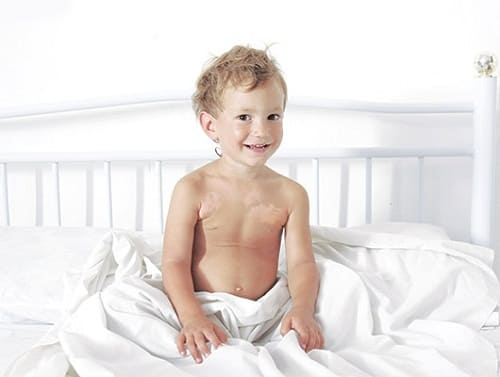
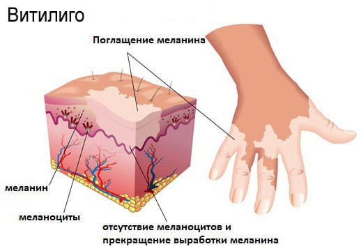

Витилиго — это безболезненное, незаразное заболевание, характеризующееся появлением на коже обесцвеченных пятен. Хотя эти могут образоваться на любом участке тела, они чаще всего наблюдается на лице, руках, плечах и ногах возникают с двух сторон, то есть на руках, обеих щеках, обоих плечах, обеих ногах. Витилиго (от лат «viti», что означает «выцветать «ligo», означающее «являться причиной») считается аутоиммунной особенностью, при которой собственная иммунная система организует и ослабляет или разрушает кожи, которые отвечают за выработку пигмента и называются меланоцитами. Белые пятна наиболее заметны в летние месяцы, когда окружающая их загорает, а сами белые участки —нет.
ПРИЗНАКИ
Витилиго — это косметическая проблема, а не инфекция. Дальнейшая судьба белых пятен у детей сильно различается. Некоторые пятна со временем бледнеют или уменьшаются, другие остаются того же размер: на протяжении долгих себе и постепенно приобретают такой же цвет, как и окружающей кожи. Витилиго часто путают с экземой или грибковой инфекцией. Вот как можно их различит:
Пятна при витилиго характеризуются следующими признаками:
• не зудят;
• более заметны летом;
• появляются симметрично и с двух сторон (например, одинаковые пятна на обеих щеках и обеих руках),
• плоские, неровные границы (при грибковых инфекциях у пятен края выпуклые или округлые);
• кожа на пораженных участках гладкая (при грибковых инфекциях экземе она грубая и шершавая).
Витилиго, как правило, не лечится, особенно у детей, поскольку многие пятна со временем исчезают. Если ваш ребенок смущается из-за этих пятен, обратитесь к дерматологу. ПУВА терапия иногда дает хороший эффект.

Здоровье ребенка от докторов Сирс / Сирс У. и др.